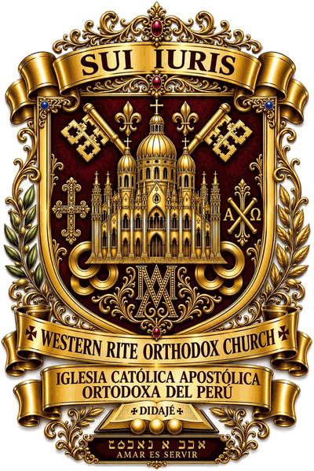
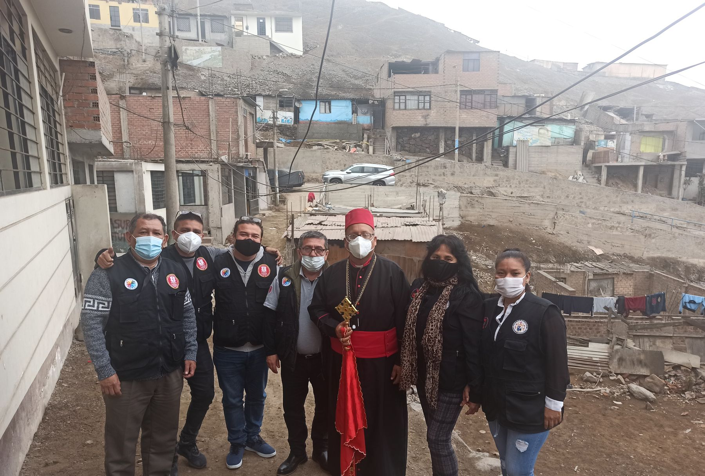
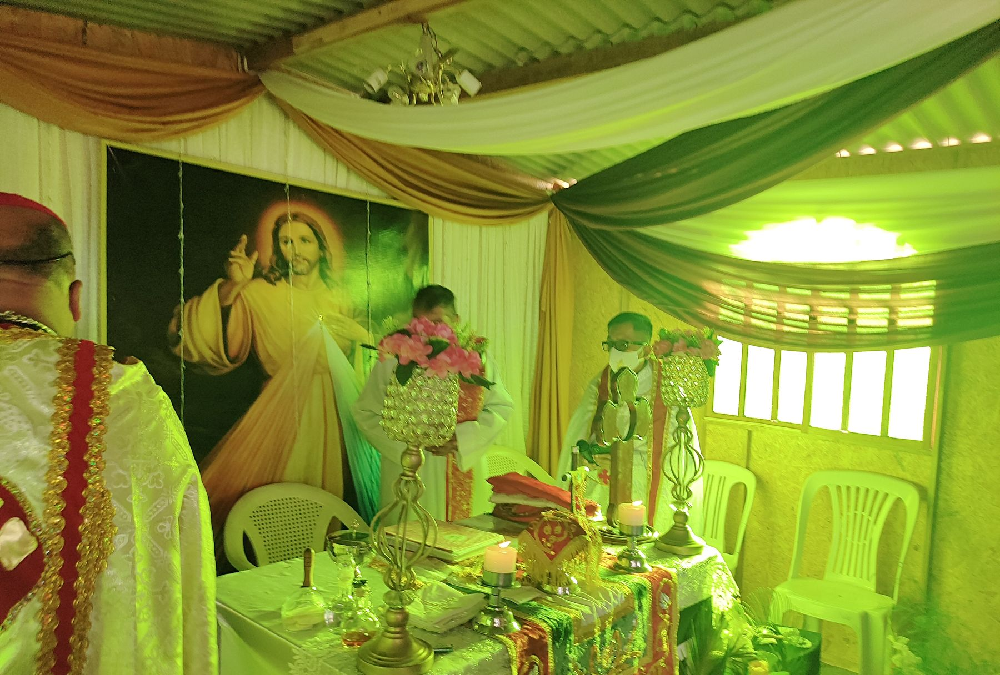
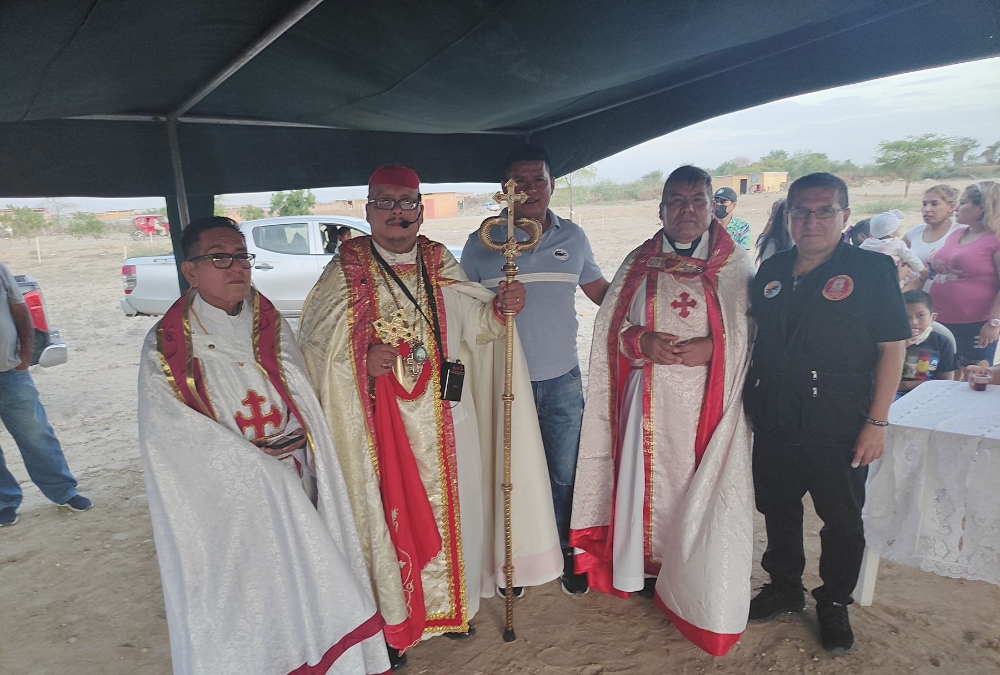
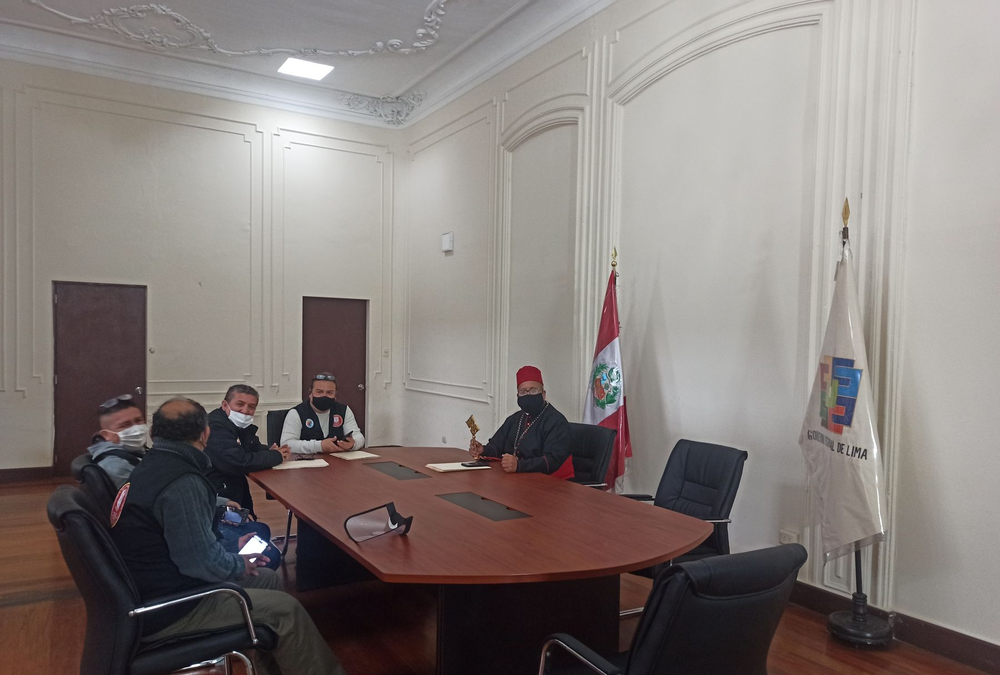

Iglesia Católica Apostólica Ortodoxa del Perú
«En la Fe y en la Sucesión Apostólica, parte de la Una Santa Iglesia Católica y Apostólica»
Treinta años de presencia misionera en el Perú, y hoy en más de 13 países.




Anuncios
- Santa Liturgia de Acción de Gracias por los 30 años de presencia misionera de la ICAOP en el Perú, en la Misión Parroquial San Antonio de Padua. 27/09/2026
- La ICAOP constituye su Dirección de Relaciones Eclesiales, Diálogo Ecuménico e Interreligioso. 17/08/2026
- SUNAT renueva la calificación de la ICAOP como Entidad Perceptora de Donaciones, vigente hasta noviembre de 2027. 14/11/2024